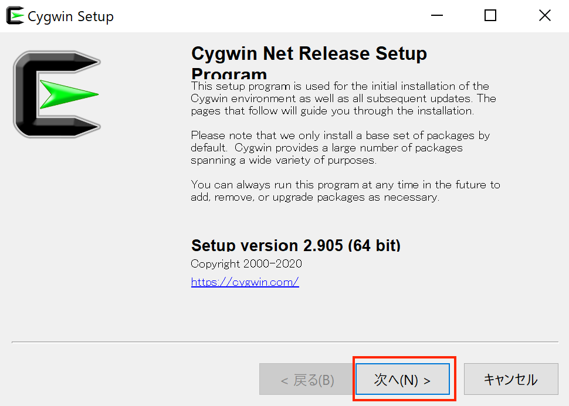
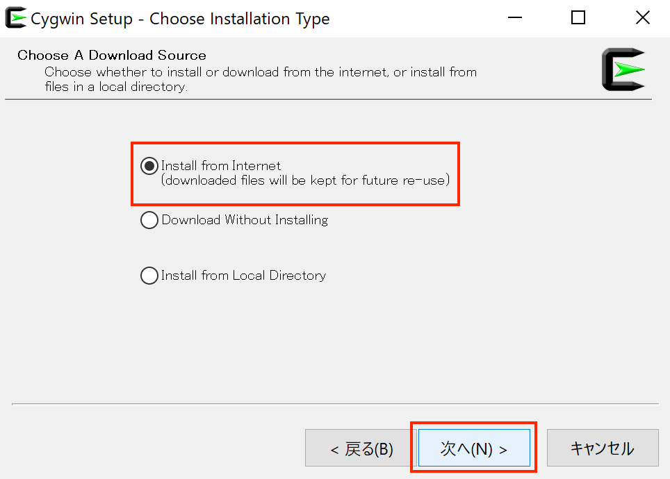
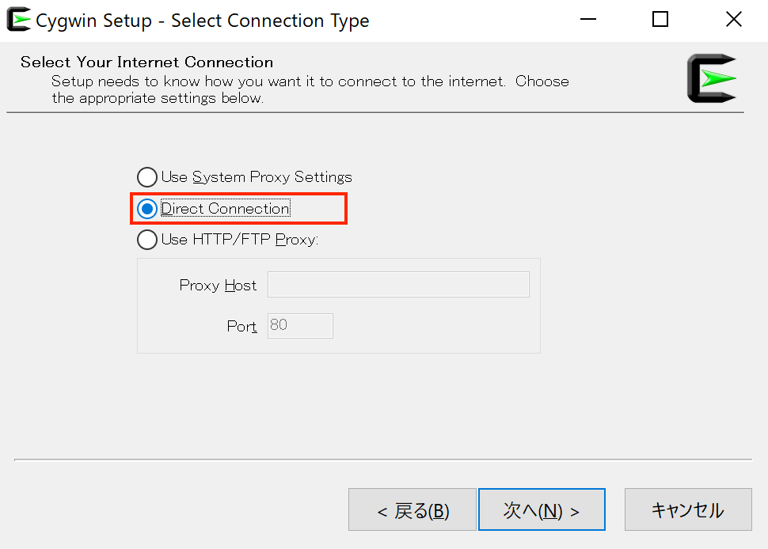
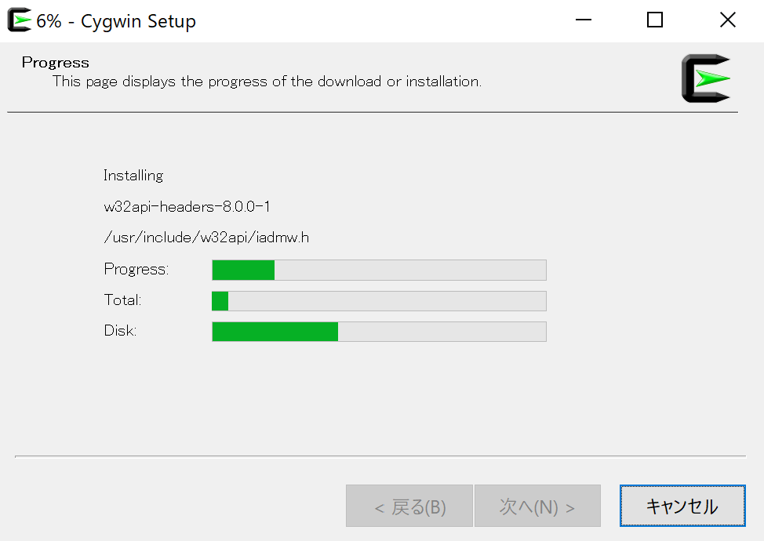
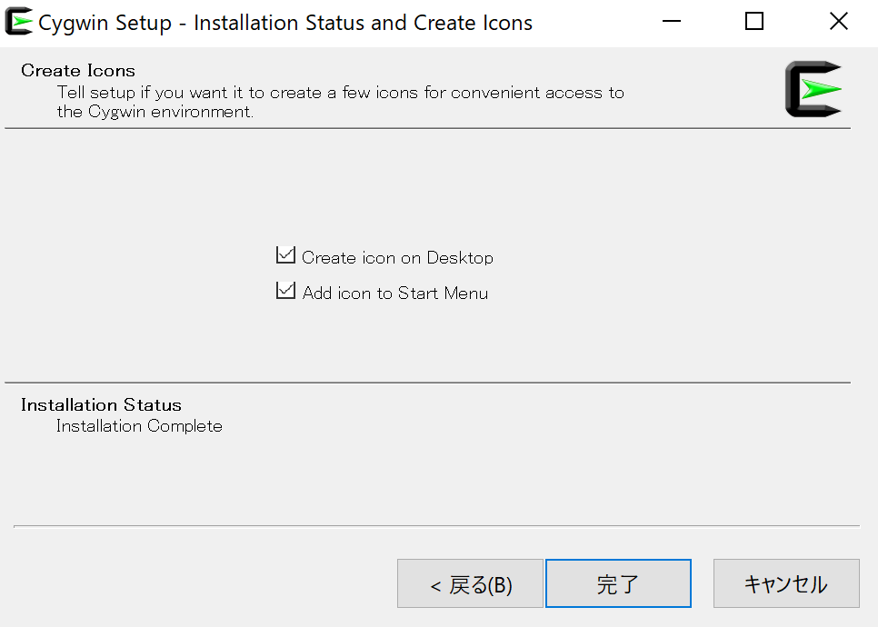
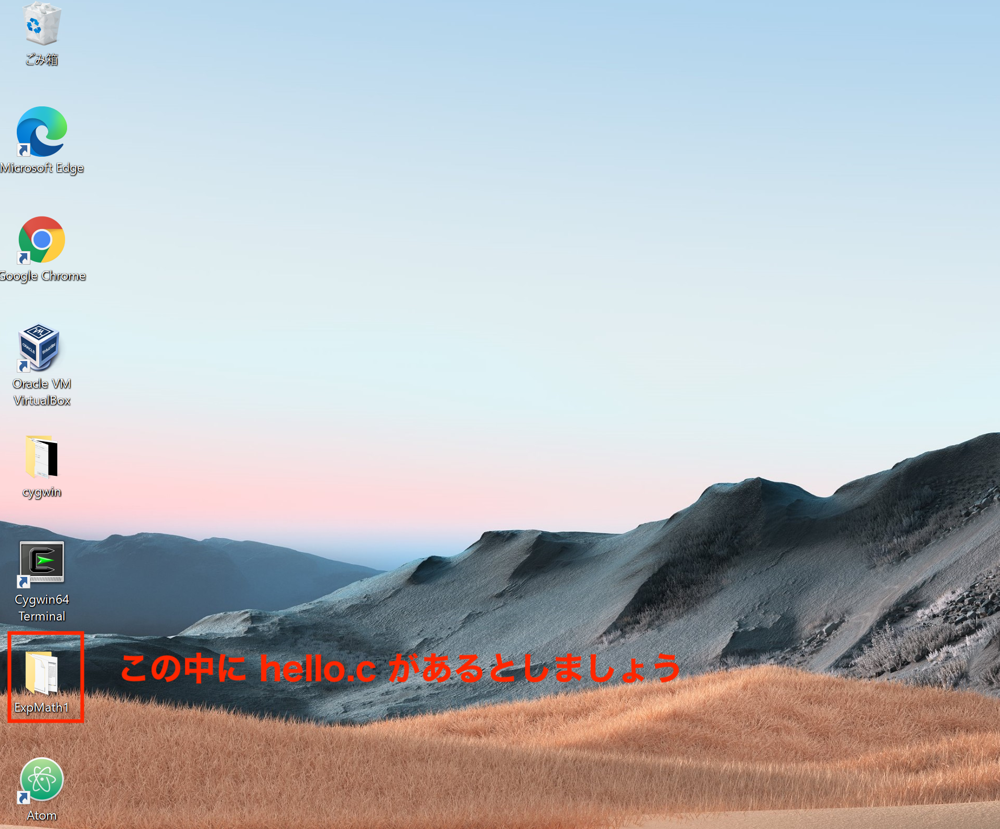
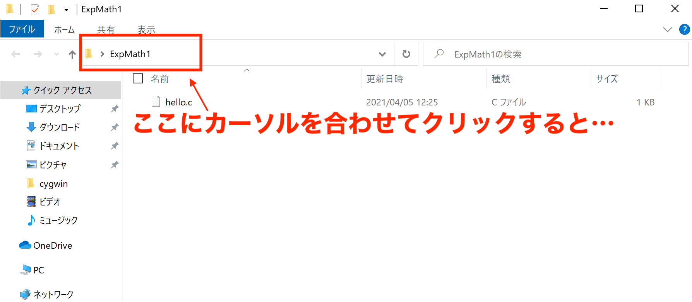

Cygwin のインストールについて
-
Cygwin の web ページ にアクセスし，Install Cygwin をクリックします．

-
exe ファイルをダウンロード（setup-x86_64.exe をクリック）します．あとは，実行して，画面に沿って進んでいくだけですが，インストールするパッケージを選択する画面で，gcc-core の最新版（数字が大きいもの）を選んでおくようにしてください．以下，画像で説明します．

-
ダウンロードフォルダ（あるいは，ダウンロード時に指定したフォルダ）に，setup-x86_64.exe があるので，ダブルクリックすると，次の画面があらわれます．「次へ」をクリックします． 
-
Choose Installation Type：Install from Internet を選択します． 
-
Choose Installation Directory：Root Directory の項目は，特にこだわりがなければデフォルトのままでよいでしょう．Install For の項目も，基本的には All Users を選択すればよいでしょう．

-
Select Local Package Directory：デフォルトのままでよいでしょう．

-
Select Connection Type：Direct Connection を選択します． 
-
Chose Download Site(s)：末尾が .jp となっているものを選択します（.jp であればどれでも OK）．

-
超重要 Select Packages：① View の項目で Category を選択します．② Search の項目に gcc と入力します．③ gcc-core の行をみます．④ （Cygwin で初めて gcc-core をインストールする場合）Current 欄は 空白，New 欄は Skip になっているはずです．⑤ New 欄の右端の下向き三角形をクリックし，一番数字の大きいものを選択します．⑥ 「次へ」をクリックします．


-
Review and confirm changes：「次へ」をクリックします（ボックスの中の記述は人によって違うかもしれませんが，気にしなくて大丈夫です）．

-
このまま進んでいけば，Cygwin のインストールは完了です．
 
Cygwin のインストールが終わったら
- hello.c ファイルがどこにあるかを確認しましょう（以下は一例）．
 
- cygwin を立ち上げましょう（デスクトップにあればダブルクリック；なければスタートメニューから探します）．あとは，下の画像のように試してみましょう（一行書くごとにエンターキーを押します）．